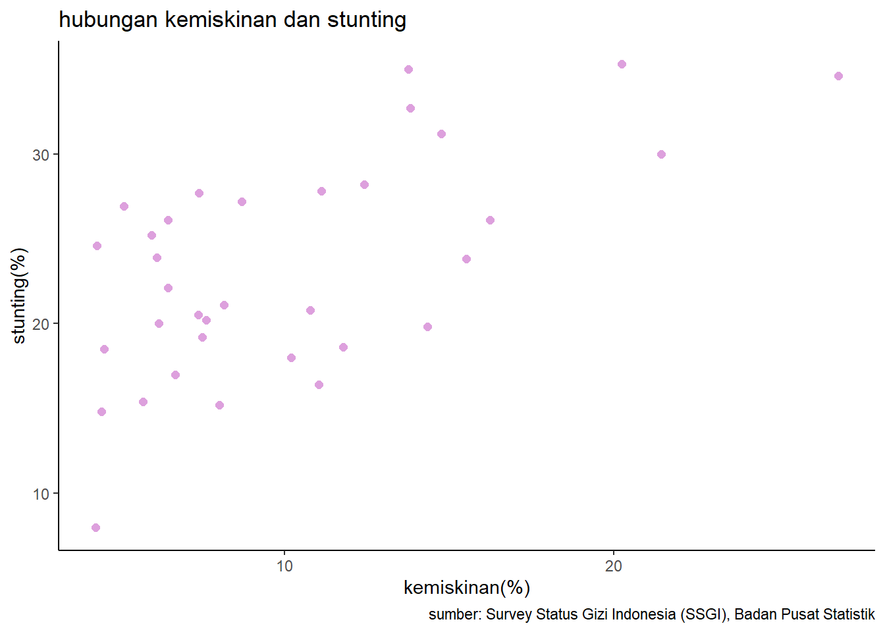
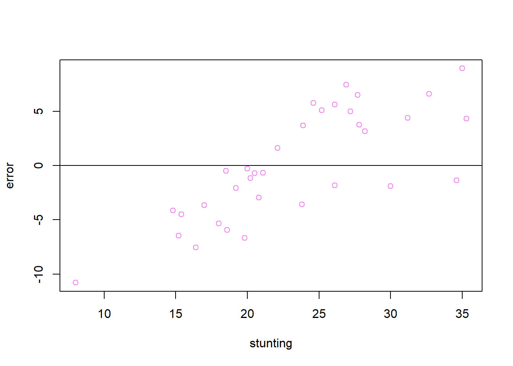
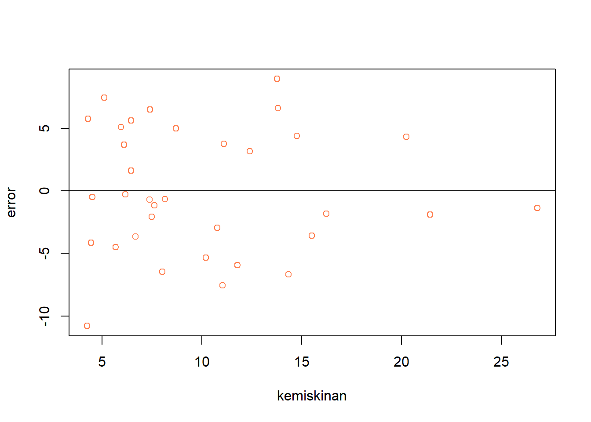

library(tidyverse)
library(readxl)
library(writexl)
library(dplyr)
library(ggplot2)Pengaruh Kemiskinan Terhadap Stunting di Indonesia
Metode Penelitian Politeknik APP Jakarta

1 Pendahuluan
1.1 Latar belakang
Stunting adalah kondisi gagal tumbuh pada anak akibat kekurangan gizi dalam waktu yang lama, yang menyebabkan tinggi badan anak lebih pendek dari standar usianya. Stunting dapat mengganggu perkembangan otak dan kognitif anak, serta meningkatkan risiko penyakit kronis dan rendahnya produktivitas di masa depan.
Salah satu faktor yang berpengaruh terhadap stunting adalah kemiskinan. Kemiskinan dapat membatasi akses keluarga terhadap makanan bergizi, sanitasi yang layak, air bersih, dan pelayanan kesehatan. Data BPS tahun 2019 menunjukkan bahwa sebagian besar anak stunting berasal dari keluarga yang tergolong miskin atau berada di bawah garis kemiskinan. Selain itu, terdapat korelasi positif antara tingkat kemiskinan dan prevalensi stunting di setiap provinsi di Indonesia, yang berarti semakin tinggi tingkat kemiskinan, semakin tinggi pula prevalensi stunting, dan sebaliknya. Oleh karena itu, upaya penurunan kemiskinan perlu menjadi prioritas dalam penanganan stunting di Indonesia.
Berdasarkan uraian di atas, maka penelitian ini bertujuan untuk menganalisis pengaruh kemiskinan terhadap stunting di Indonesia, dengan menggunakan data sekunder dari BPS, Kementerian Kesehatan, dan sumber lain yang relevan. Penelitian ini diharapkan dapat memberikan kontribusi dalam mengidentifikasi faktor-faktor yang memengaruhi stunting, serta memberikan rekomendasi kebijakan yang tepat untuk mengatasi permasalahan stunting dan kemiskinan di Indonesia.
1.2 Ruang lingkup
Penelitian ini menggunakan data stunting sebagai variabel y, yang didapatkan dari Hasil Survey Status Gizi Indonesia (SSGI) Kementerian Kesehatan. Serta data persentase penduduk miskin, dari Badan Pusat Statistik (BPS). Peneliti mengambil data dari 34 provinsi di Indonesia pada periode tahun 2022.
1.3 Rumusan masalah
Apakah kemiskinan mempengaruhi stunting pada anak Indonesia ?
Bagaimana hubungan kemiskinan terhadap stunting?
1.4 Tujuan dan manfaat penelitian
Penelitian ini bertujuan untuk mempelajari korelasi antara kemiskinan dan stunting. Penelitian ini diharapkan dapat memberikan manfaat bagi berbagai pihak, yaitu:
Pemerintah: Penelitian ini dapat menjadi acuan bagi pemerintah untuk membuat kebijakan yang efektif untuk menanggulangi stunting.
Lembaga Swadaya Masyarakat (LSM) : Penelitian ini dapat menjadi bahan bagi LSM untuk merancang program yang sesuai untuk menanggulangi stunting.
Masyarakat: Penelitian ini dapat menumbuhkan kesadaran masyarakat tentang urgensi untuk menanggulangi stunting.
Secara spesifik, penelitian ini bertujuan untuk menemukan faktor kemiskinan yang mempengaruhi stunting, mengetahui tingkat kejadian stunting pada keluarga miskin, mengukur korelasi antara kemiskinan dan stunting.
1.5 Package
Packages yang digunakan antara lain sebagai berikut:
2 Studi pustaka
Kemiskinan
Kemiskinan adalah keadaan saat seseorang atau sekelompok orang tidak mampu memenuhi kebutuhan dasar seperti makanan, pakaian, tempat berlindung, pendidikan, dan kesehatan. Kemiskinan dapat disebabkan oleh berbagai faktor, seperti kelangkaan sumber daya, ketidakadilan sosial, konflik, bencana, atau penyakit. Kemiskinan dapat dikelompokkan menjadi dua jenis, yaitu kemiskinan absolut dan kemiskinan relatif. Kemiskinan absolut mengacu pada kondisi di mana seseorang tidak memiliki cukuo penghasilan untuk membeli kebutuhan minimum yang ditetapkan oleh suatu standar. Kemiskinan relative mengacu pada kondisi di mana seseorang memiliki penghasilan yang lebih rendah daripada rata-rata penduduk suatu negara atau wilayah.
Kemiskinan memiliki dampak negatif bagi individu, keluarga, masyarakat, dan negara. Kemiskinan dapat menurunkan kualitas hidup, kesehatan, pendidikan, dan peluang ekonomi. Kemiskinan juga dapat meningkatkan risiko kekerasan, kriminalitas, diskriminasi, dan marginalisasi. Kemiskinan dapat memperburuk masalah lingkungan, seperti degradasi tanah, deforestasi, polusi, dan perubahan iklim. Kemiskinan dapat menghambat pembangunan manusia, sosial, dan ekonomi.
Untuk mengatasi kemiskinan, diperlukan upaya bersama dari berbagai pihak. Pemerintah, swasta, masyarakat sipil, organisasi internasional, dan individu harus turut andil dalam pemberantasan kemiskinan.
Stunting
Stunting merupakan salah satu masalah gizi kronis yang diakibatkan oleh kurangnya asupan gizi pada anak dalam jangka waktu panjang sehingga menyebabkan terhambatnya pertumbuhan. Masalah gizi satu ini menjadi penyebab mengapa anak memiliki tinggi badan di bawah standar anak seusianya karena pada dasarnya stunting sendiri menghambat pertumbuhan tinggi anak. Stunting sendiri biasanya terjadi ketika anak masih dalam kandungan dan mulai terlihat ketika mereka memasuki usia dua tahun.
Beberapa gejala yang menandai anak terkena stunting seperti wajah tampak lebih muda dari anak seusianya, pertumbuhan gigi dan tubuh yang terlambat, kemampuan focus dan memori belajar yang buruk, pubertas yang lambat, berat badan lebih ringan dari anak seusianya, dan banyak lagi.
Kementrian Kesehatan menyatakan dengan tegas bahwa stunting adalah ancaman utama terhadap kualitas sumer daya manusia yang dimiliki Indonesia. Hal ini disebabkan karena stunting tidak hanya mengganggu pertumbuhan fisik, tetapi juga mengganggu pertumbuhan otak sehingga memengaruhi kemampuan dan prestasi anak. Di samping itu, anak dengan stunting biasanya juga memiliki riwayat kesehatan yang kurang baik karena daya tahan tubuh yang buruk. Stunting dapat menjadi kelainan turun menurun apabila tidak cepat ditangani.
3 Metode penelitian
3.1 Data
| Provinsi | x | y | |
|---|---|---|---|
| 1 | Nusa Tenggara Timur | 20,23 | 35,30 |
| 2 | Sulawesi Barat | 13,76 | 35,00000 |
| 3 | Papua | 26,8 | 34,600 |
| 4 | Nusa Tenggara Barat | 13,82 | 32,70 |
| 5 | Aceh | 14,75 | 31,2 |
| 6 | Papua Barat | 21,43 | 30,00 |
| 7 | Sulawesi Tengah | 12,41 | 28,20 |
| 8 | Kalimantan Barat | 11,11 | 27,80 |
| 9 | Sulawesi Tenggara | 7,4 | 28 |
| 10 | Sulawesi Selatan | 8,7 | 27,20 |
| 11 | Kalimantan Tengah | 5,11 | 26,90 |
| 12 | Maluku Utara | 6,46 | 26,10 |
| 13 | Maluku | 16,23 | 26,10 |
| 14 | Sumatera Barat | 5,95 | 25,20 |
| 15 | Kalimantan Selatan | 4,29 | 24,60 |
| 16 | Kalimantan Timur | 6,11 | 23,90 |
| 17 | Gorontalo | 15,51 | 23,80 |
| 18 | Kalimantan Utara | 6,45 | 22,10 |
| 19 | Sumatera Utara | 8,15 | 21,10 |
| 20 | Jawa Tengah | 10,77 | 20,80 |
| 21 | Sulawesi Utara | 7,38 | 20,50 |
| 22 | Jawa Barat | 7,62 | 20,20 |
| 23 | Banten | 6,17 | 20,00 |
| 24 | Bengkulu | 14,34 | 19,80 |
| 25 | Jawa Timur | 7,5 | 19,20 |
| 26 | Sumatera Selatan | 11,78 | 18,60 |
| 27 | Kep Bangka Belitung | 4,52 | 18,50 |
| 28 | Jambi | 10,19 | 18,00 |
| 29 | Riau | 6,68 | 17,00 |
| 30 | DI Yogyakarta | 11,04 | 16,40 |
| 31 | Kepulauan Riau | 5,69 | 15,40 |
| 32 | Lampung | 8,02 | 15,20 |
| 33 | DKI Jakarta | 4,44 | 14,80 |
| 34 | Bali | 4,25 | 8,00 |
penelitian ini menggunakan data sekunder dari 34 provinsi di Indonesia tahun 2022 dalam satuan persen. Dimana variabel x berupa “persentase penduduk miskin”, dan variabel y sebagai persentase “stunting”. Data inilah yang nantinya akan digunakan sebagai objek penelitian.
#import dataset
library(readxl)
stunting<-read_excel('stunting.xlsx')
head(stunting)# A tibble: 6 × 3
Provinsi x y
<chr> <dbl> <dbl>
1 Nusa Tenggara Timur 20.2 35.3
2 Sulawesi Barat 13.8 35
3 Papua 26.8 34.6
4 Nusa Tenggara Barat 13.8 32.7
5 Aceh 14.8 31.2
6 Papua Barat 21.4 30 #| label: fig-mpg
#| fig-cap: "Hubungan antara kemiskinan dan stunting"
library("ggplot2")
library("readxl")
library("dplyr")
ggplot(data=stunting,aes(x=x,y=y)) +
geom_point(color="plum",size=2) +
labs(title="hubungan kemiskinan dan stunting",
x="kemiskinan(%)",
y="stunting(%)",
caption = "sumber: Survey Status Gizi Indonesia (SSGI), Badan Pusat Statistik") +
theme_classic()
3.2 Metode analisis
Dalam penelitian ini metode yang akan digunakan adalah regresi univariat, dengan data kemiskinan sebagai variabel independent. Penelitian ini bermaksud untuk mencari hubungan antara kemiskinan dan stunting, dengan spesifikasi yang dilakukan sebagai berikut:
\[ y_{t}=\beta_0 + \beta_1 x_t+\mu_t \] di mana \(y_t\) adalah stunting dan \(x_t\) adalah kemiskinan.
4 Pembahasan
4.1 Pembahasan masalah
Setelah dilakukan regresi, dihasilkan data sebagai berikut:
| Coefficients: | P | Estimate |
|---|---|---|
| Intercept | 2.01e-09 | 15.5577 |
| x | 5.88e-05 | 0.7620 |
\[ y_{t}=\ 15.5577 + \ 0.7620 x+\mu_t \]
Nilai dari koefisien x (0.7620) menunjukkan bahwa setiap kenaikan satu kemiskinan akan meningkatkan stunting sebesar 0.7620. maka begitu pula sebaliknya, jika kemiskinan turun satu akan menurunkan stunting sebesar 0.7620. Selain itu nilai koefisien ini juga signifikan secara statistic, yang ditunjukkan dari nilai p sebesar 5.88e-05 kurang dari alpaha (0,05).
Beberapa hal yang menggambarkan keterkaitan kekurangan ekonomi dengan stunting:
a. Keterbatasan dalam mengakses makanan bergizi
Keluarga miskin cenderung memiliki penghasilan yang lebih rendah, sehingga mereka tidak mampu membeli makanan bergizi yang cukup untuk memenuhi kebutuhan gizi anak.
b. Keterbatasan dalam mengakses sarana Kesehatan
Keluarga miskin cenderung memiliki keterbatasan dalam mengakses sarana kesehatan, sehingga mereka tidak dapat memanfaatkan layanan kesehatan yang dibutuhkan untuk mencegah dan mengatasi stunting.
4.2 Analisis masalah
Hasil regresinya adalah
library(readxl)
dat<-read_excel("stunting.xlsx")
reg<-lm(y~x,data=stunting)
summary(reg)
Call:
lm(formula = y ~ x, data = stunting)
Residuals:
Min 1Q Median 3Q Max
-10.7962 -3.6300 -0.6747 4.3837 8.9571
Coefficients:
Estimate Std. Error t value Pr(>|t|)
(Intercept) 15.5577 1.8859 8.250 2.01e-09 ***
x 0.7620 0.1647 4.626 5.88e-05 ***
---
Signif. codes: 0 '***' 0.001 '**' 0.01 '*' 0.05 '.' 0.1 ' ' 1
Residual standard error: 5.088 on 32 degrees of freedom
Multiple R-squared: 0.4007, Adjusted R-squared: 0.382
F-statistic: 21.4 on 1 and 32 DF, p-value: 5.877e-05library(readxl)
stunting$m<-resid(reg)
plot(stunting$y,stunting$m,xlab = "stunting",ylab = "error",col='violet')
abline(h=0)
plot pengaruh error terhadap stunting
library(readxl)
stunting$m<-resid(reg)
plot(stunting$x,stunting$m,xlab = "kemiskinan",ylab = "error",col='coral')
abline(h=0)
plot pengaruh error terhadap kemiskinan
Nilai R-squared (0.4007) artinya variabel x dapat menjelaskan 40.07% perubahan y. Selain itu nilai F-statistik adalah 21.4, dengan p-value 5.877e-05, yang lebih kecil dari α=0.05, yang berarti variabel x berpengaruh signifikan terhadap variabel y secara simultan.
5 Kesimpulan
Kemiskinan memiliki pengaruh yang signifikan terhadap stunting di Indonesia, hal ini dapat dilihat dari koefisien regresi yang bernilai positif dan signifikan. Maka pemerintah dapat berfokus pada upaya untuk mengurangi kemiskinan, guna mengurangi stunting.
Pemerintah dapat membuat aturan-aturan yang bertujuan untuk menekan kemiskinan, seperti program bantuan masyarakat, program penguatan masyarakat, dan program perluasan akses terhadap makanan sehat. Selain itu, Pemerintah dan organisasi non-pemerintah dapat menjalankan program-program yang bertujuan untuk menghindari dan menyembuhkan stunting, seperti program pemberian makanan pendamping, program edukasi gizi, dan program perbaikan akses terhadap layanan kesehatan.
6 Referensi
Damayanti, D. A., & Sentosa, S. U. (2020). Analisis Kausalitas Stunting, Pertumbuhan Ekonomi dan Kemiskinan di Indonesia. Jurnal Kajian Ekonomi dan Pembangunan, 2(2), 45-48.
Sutarto, S. T. T., Mayasari, D., & Indriyani, R. (2018). Stunting, Faktor ResikodanPencegahannya. Agromedicine Unila, 5(1), 540-545.
Ngaisyah, R. D. (2015). Hubungan sosial ekonomi dengan kejadian stunting pada balita di Desa Kanigoro, Saptosari, Gunung Kidul. Medika Respati: Jurnal Ilmiah Kesehatan, 10(4).
Rahmawati, N. F., Fajar, N. A., & Idris, H. (2020). Faktor sosial, ekonomi, dan pemanfaatan posyandu dengan kejadian stunting balita keluarga miskin penerima PKH di Palembang. Jurnal Gizi Klinik Indonesia, 17(1), 23.
Sihite, N. W., & Chaidir, M. S. (2022). Keterkaitan kemiskinan, kecukupan energi dan protein dengan kejadian stunting balita di Puskesmas 11 Ilir Palembang. Darussalam Nutrition Journal, 6(1), 37-47.